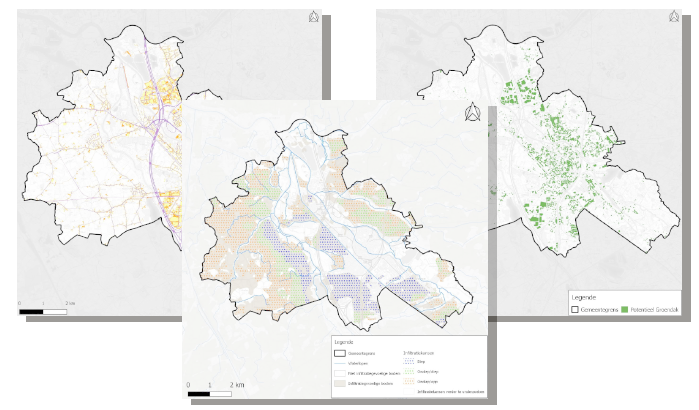
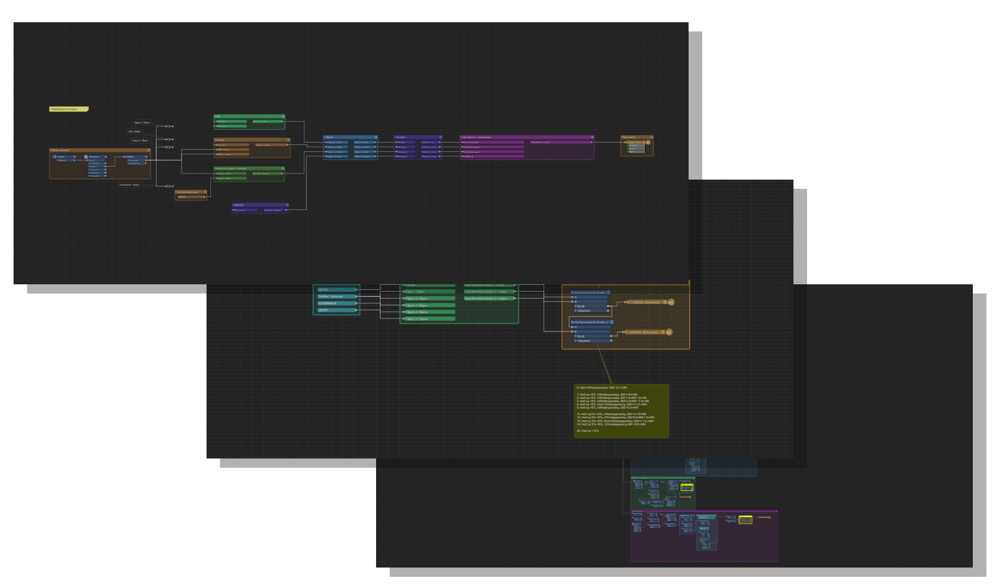
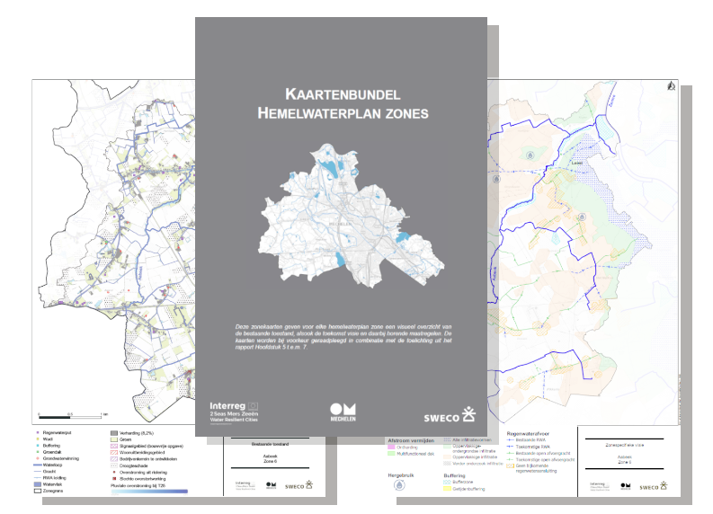
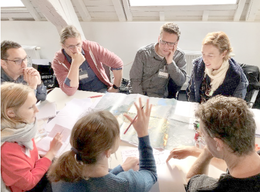

Mechelen waterproof
Mechelen is, zoals vele andere (historische) steden, nog te weinig aangepast aan de klimaatverandering en kampte in het verleden al meermaals met wateroverlast. Daarom wilde ze een hemelwaterplan opmaken. Deze opdracht kaderde in het Europese Interreg 2 Zeeën-project ‘Water Resilient Cities’ dat als doel heeft historische steden weerbaar te maken tegen het veranderende klimaat en de hevige regenval.
Een hemelwaterplan geeft een antwoord op de vraag waar we vandaag en morgen met ons hemelwater naartoe moeten en is in deze context een leidraad voor een duurzaam waterbeleid in de stad. Het hydrologische systeem en de omgevingskenmerken van het hele projectgebied worden in kaart gebracht. Deze gegevens helpen om niet alleen knelpunten, maar ook om kansen te identificeren. Op basis hiervan wordt, samen met alle stakeholders, een cijfermatig onderbouwde visie ontwikkeld, die uitgewerkt wordt tot een concreet actieplan. Daarmee kan het stadsbestuur aan de slag om knelpunten op te lossen en kansen te grijpen.
De stad Mechelen besloot om met Sweco in zee te gaan. Als expert integraal waterbeheer was ik projectleider van het project. Ik was verantwoordelijk voor het proces, alsook de inhoudelijke en technische uitwerking van het project.
| Team: | Kevin Vandeputte, Hanne Van Gaelen, Stien Keunen, Tijs Hoedemaekers, Tuur Smekens, Kristien Marien |
| Technologie: | FME, Python |
| Looptijd: | 2018 - 2020 |
Vanuit de offertefase en uit verschillende gesprekken met de klant bij de start van het project werd duidelijk dat de stad Mechelen een hemelwatervisie wou uitwerken die sterk data-gebaseerd is.
Ik identificeerde de belangrijkste beschikbare databronnen en de limitaties m.b.t. de gewenste eindproducten. In overleg met de klant besloot ik een set van potentieelkaarten te genereren gebaseerd op Vlaamse openbaar beschikbare datasets, maar die toch voldoende specifieke informatie gaven op straat en perceelniveau voor grondgebied Mechelen.
Ik ontwikkelde met FME een 'klimaatadaptatiepotentie tool' alsook een analyse tool. Beide tools maken gebruik van openbare geografische data en verwerkt deze vervolgens tot enerzijds kaarten die het potentieel aangeven voor klimaatadaptieve maatregelen zoals ontharding, aanleg groendaken, infiltratie mogelijkheden,.. en anderzijds een analyse maken van de bestaande toestand om zo knelpunten te identificeren.
De klimaatadaptatiepotentie tool werd door mezelf en mijn collega's gebruikt om voor de stad Mechelen locaties te identificeren waar doelgericht maatregelen kunnen genomen worden om de stad meer klimaatbestendig te maken. Deze potentieelkaarten werden opgenomen als onderdeel van de visie over hoe de toekomstige waterhuishouding in de stad moet worden ingericht. De visie werd tekstueel en visueel uitgewerkt in het hemelwaterplan rapport dat online geraadpleegd kan worden via de website. Het hemelwaterplan werd ook goedgekeurd door de gemeenteraad en dient als basis voor alle watergerelateerde acties die genomen worden in de stad Mechelen zoals de aanleg van riolering, herinrichting van openbaar domein, overstromingsbeveiliging, droogtemaatregelen, ...
Als projectleider was ik verantwoordelijk voor het vlot verloop van het project en de communicatie met de stad Mechelen als klant maar ook alle stakeholders zoals de waterloopbeheerders, natuurpartners, landbouwsector, ... Zo organiseerde ik samen met collega's verschillende interactieve workshops waarin we met de stakeholders aan de slag gingen met de potentieelkaarten uit de klimaatpotentie tool. Zo werden deze verrijkt met lokale kennis en werd er stap voor stap gewerkt aan een toekomstvisie waarin alle partners zich konden vinden.
Een hemelwaterplan is naast een leidraad ook een beleidsplan. Om het kader waarin maatregelen konden worden vastgelegd te bepalen hebben ik en enkele collega's ook enkele presentaties gehouden voor het voltallige schepencollege. Dit om er over te waken dat het hemelwaterplan gedragen werd binnen het beleid van de stad Mechelen. Het hemelaterplan werd dan ook goedgekeurd op de gemeenteraad van maandag 23 november 2020.
Via de 'Blue Deal' heeft de Vlaamse overheid bepaalt dat alle Vlaamse steden en gemeenten in 2024 een hemelwater- en droogteplan moeten voorleggen, indien ze nog in aanmerking willen komen voor watergerelateerde subsidies.
De methodologie en diepgang van het plan werd geapprecieerd door de verschillende stakeholders, waarvan enkele ook zetelen in de Coördinatiecommissie Integraal Waterbeleid (CIW). Hierdoor werden bepaalde aspecten van de methdologie overgenomen in de herwerkte blauwdruk Hemelwater- en Droogteplannen die in juni 2022 werd opgemaakt. Zo wordt in de blauwdruk opgelegd dat er potentieelkaarten moeten worden opgemaakt die verrijkt moeten worden met de nodige lokale kennis.